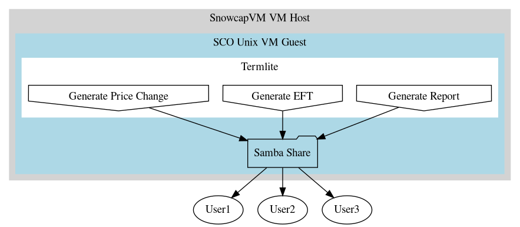
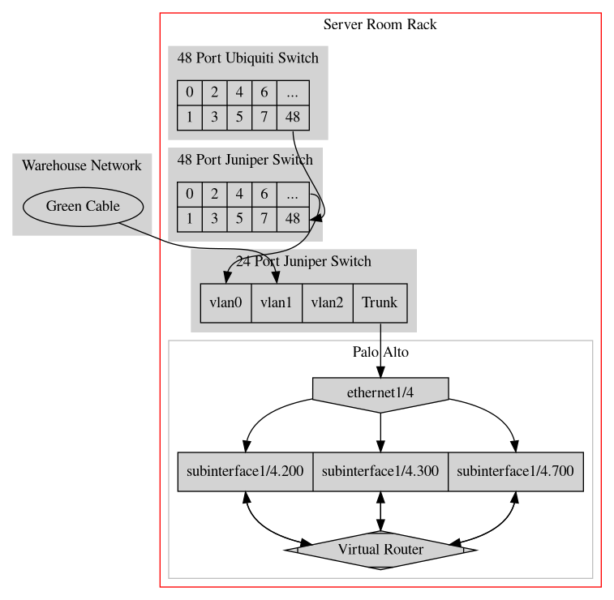
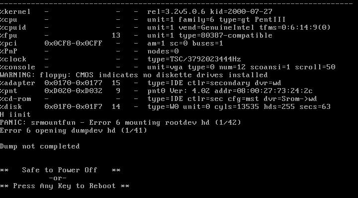

IT Documentation
Table of Contents
This is an incomplete work in progress, intended as a guide to introduce a junior IT person to the Snow Cap network and systems.
Command prompts are indicated by a hash, the command to be entered follows this:
# command
“node” will be defined as a network device, anything with an IP address: a workstation, a copier, a label printer, etc.
1 Core Systems
1.1 Termlite
Termlite is the common name for our pseduo-ERP software and database. The software itself is a custom solution written in PROGRESS, a terminal application framework and database language. Since the previous database software was called Termlite, when Snow Cap moved to PROGRESS, users maintained “Termlite” as the reference name. Users may sometimes also refer to it as “Putty”, since that is the emulator we use to connect to Termlite. The PROGRESS ERP system will henceforth be referred to as Termlite
1.1.1 Overview
Termlite handles our warehouse inventory, accounts receivable (AR), accounts payable (AP), truck routing, purchasing, and other tasks. Its limitations as a modern ERP system are apparent with lack of lot control and shipping features. However, these functions are being handled with cloud based solution called “Icicle” that is intended to work in tandem with Termlite and is currently a work in progress. See Icicle
1.1.2 Software
Version
7
Host OS
SCO Unix 5.0.2
1.1.3 Maintenance and backup
All of the database maintenance, user management, feature updates, and recovery are the responsibility of Clark, who does bi-monthly shifts (usually remotely).
Backups are done by raw database file copies through two main systems:
1.1.4 Key Interactions
Because Clark manages the PROGRESS database, it’s users, and the software features itself, the responsibilities of the IT administrator fall outside of it, in dealing with the host operating system SCO(2.1) and– since SCO is a virtual machine– its’ VM host(2.2).
To summarize:
Termlite(Database software) -> Runs on SCO Unix -> Within a VM on SnowcapVM
That said, there are often scenarios where a user’s database connection is broken, but the database record remains locked. See more about killing users in SCO(2.1.2.1)
- Exiting Termlite
From any menu within Termlite, (repeatedly) push
F4
To get to the Welcome screen, then push
4
To exit the Live connection, and finally
X
To exit Termlite completely.
- TODO Exporting the Product List
- SCE Files
The “SCE” is the common name for an automatically generated batch of files that is for distribution to the Outside Sales team. Each batch is added to a .zip file for each sales territory, or “zone”. Although the generation of the files is automatic, the function itself must be triggered within Termlite by a user (usually Nicole or Dave). Then, the .zip files must be distributed daily to each user via email where they do the update process themselves. Currently the files are mailed via a cron-started BASH script on the freenas server.
Even if the files are generated, if for whatever reason the mailer script does not run, users will complain that “They didn’t get an update”. The first step is parse whether they mean: they didn’t receive the email at all, or they received the email but the files are outdated (meaning the file generation function didn’t run).
1.2 Specs
“Specs” is the common name for the entirety of all product specifications collected from vendors. It is composed and maintained largely by the Quality Assurance team, but used by virtually everyone in the company except for drivers and warehouse personnel.
It is composed of a file directory structure delineated by product code housed on the Qnap NAS. Each product folder holds the specification files for that product, which can include ingredient lists, allergen lists, letters of guarantee, audit certificates and much more.
Because the of massive number of hours spent maintaining, processing, and accessing Specs, it is critical to daily operations.
1.2.1 Key Interactions
- User Access
Every domain joined workstation will have the Specs folder attached as a read-only mounted drive. This is done through a batch file ran at boot deployed by GPO.
Write access should be limited given the critical nature of Specs. Permissions are modified through changes on the Qnap UI.
- Outside Sales Access
Given the huge number of subdirectories in the Specs directory, this created problems for Outside Sales users who access Specs on their phone (through the Qfile app), as they had to scroll through thousands of product codes to find the one they were looking for.
As a result, a script was written to create “SpecsView”, which takes the first letter of each product, and copies each directory into a corresponding A-Z structure instead. This script runs as a cron task on Qnap daily to copy the updated spec files into this new structure.
1.2.2 Backup
1.4 Active Directory
1.4.1 Overview
We use Active Directory for user logins, domain-joined workstations, and printer management. We do not use AD for remote user devices including outside sales laptops and phones, and remote inside sales laptops.
WSUS and roaming profiles were used in the past, but they were used minimally so disabled. Windows updates are downloaded per client now.
DL360-srv is the principal DC, with SNOWDC0 serving as the backup.
2 Core Hosts and Hardware
2.1 SCO
2.1.1 Overview
The operating system hosting Termlite (PROGRESS).
SCO Unix version 5.0.6
It has been modified by Gary at AMS to no longer require a licence (as the vendor is defunct) (see 2.1.3.1) and to use backported Linux tools through the Skunkware distribution.
2.1.2 Key Interactions
- Killing Users
In order to kill a user, use the unix last command and pipe the results to grep filtering out users who match “logged in”. For example:
# last | grep logged
Example output:
root yp55 ttyp55 10842 Thu Jan 5 14:22 00:49 logged in dave yp51 ttyp50 11821 Thu Jan 5 14:10 00:55 logged in helen yp49 ttyp26 20773 Thu Jan 5 12:22 00:59 logged in lou p53 ttyp39 21004 Thu Jan 5 12:13 01:04 logged in
The fourth column is the user’s process ID. There may be more than one PID per user, in which case you may have to ask them to log out of their (new) Termlite sessions to isolate the one that is locking a record.
Finally, to kill the user, use kill and pass SIGKILL:
# kill -9 11821
- Restarting SCO
Restarting SCO is done through VMWare on the host machine. Before doing so it is critical to notify users:
[ ]Send an email saying that the system will go down in fifteen minutes[ ]Five minutes later, send a phone ALLPAGE saying that the system will go down[ ]Call Helen directly to ensure she is not in the middle of a “check run”. Restarting during this process can cause her a huge amount of work[ ]Be mindful of remote users who will not have heard the allpage, and may have not seen the email, call them directly if necessary
At this point it is safe to restart the system. This process can only be completed at the VM Console on the host machine as there is a prompt to continue both after TCP/IP services are stopped, and during boot before TCP/IP services have started again. Therefore, a directly connected keyboard is required.
That said, it is possible to xrdp into the host machine and control the SCO VM from there.
Type the following command to restart the system:
# shutdown -g0
At this point SCO will prompt to continue the shutdown, the VM will restart, and hopefully boot. Since moving to a virtual machine, there are times where the SCO system immediately gives a kernel panic when trying to boot (see kernel panic).
- Shared Drives
There are a series of shared drives on the SCO system, most of them are dedicated to receiving a specific file generated by a user within Termlite. For instance, if a user generates a sales report, Termlite writes those files to a shared folder on SCO. In order to access the file, the user must have that folder mounted in their Windows machine. Since Windows 10, Microsoft has forefully deprecated Samba 1, which is the highest version our SCO system will support. See more here

An incomplete list of the mountable shares:
\\172.16.11.1\export \\172.16.11.1\export\icicle \\172.16.11.1\download \\172.16.11.1\eft
- \\172.16.11.1\export
This is a more general purpose share that receives generated reports of all kinds. Velocity reports, quotes, sales reports, and so on.
- Quotes
Inside sales staff will need to be able to generate quotes from within Termlite and access them. See inside sales user setup
- Quotes
- \\172.16.11.1\download
This share is mostly used for receiving the automatically generated SCE Files to be distributed to Outside Sales members. See outside sales user setup
- \\172.16.11.1\export
2.1.3 Historical Issues
- License Expiry
Before being modified by Gary at AMS, SCO used to display a warning that the license to use the operating system had expired and to contact the vendor. Eventually this would lead to the OS disabling the TCP/IP stack entirely. As a result, it was necessary to restart the system often– sometimes weekly– to circumvent this countermeasure.
On booting the OS, a warning is still displayed, but it no longer affects the functionality of the system.
- TODO Fax Function
2.2 SCO VM Host
| Physical Location | On the server rack in the server room |
| IP Address | 172.16.11.34 |
| VM Host or Guest | Host |
| OS | CentOS |
| Notes | |
This is the virtual machine host for the SCO virtual machine.
2.3 Qnap
| Physical Location | On the server rack in the server room |
| IP Address | 172.16.11.12, 172.16.11.6 |
| VM Host or Guest | N/A |
| OS | QnapOS (Linux) |
| Notes | |
2.4 DL360-srv
| Physical Location | Server rack in the server room, above snowbby |
| IP Address | 172.16.11.176 |
| VM Host or Guest | Host |
| OS | Windows Server 2012 R2 |
| Notes | Active Directory Domain Controller (principal) |
2.5 Server
| Physical Location | On the floor in the server room (tower) |
| IP Address | 172.16.11.14 |
| VM Host or Guest | Host |
| OS | Windows Server 2012 R2 |
| Notes | Print server |
As this was one of the first general-purpose servers set up at Snow Cap, the confusingly ambiguous name “Server” was chosen (not by Dan).
3 The Network
3.1 Topology Basics
Snow Cap has a simple, (mostly) 2 subnet network whose core is a Juniper 24 port switch and a Palo Alto firewall and router.

3.1.1 Core Configuration
“Core” being defined as, most nodes connected to one of two 48-port switches, the switches being connected to their corresponding VLAN, the VLAN being trunked to a subinterface on Palo Alto, where it is ultimately handled by the virtual router. Changing anything in the 24-port Juniper switch or the Palo Alto virtual router are sure to end in catastrophe without the requisite amount of experience.
There are two main subnets, which approximate to office nodes and warehouse nodes respectively:
172.16.11.0/24 172.16.20.0/24
DHCP is done through the Palo Alto, DNS through the two Domain Controllers.
5 Core Software
5.1 Putty
We use Putty as the terminal emulator of choice for Windows.
5.1.1 Configuration Specifics
The following Putty settings are critical to set before using termlite. Neglecting to use them will, at worst, cause the terminal will be unusable or difficult to read, and at worst can disrupt the connection, sometimes causing it to close unexpectedly (the “Disable remote-controlled terminal resizing” setting in particular).
| Category | Setting |
|---|---|
| Keyboard->Backspace Key | Control-H |
| Keyboard->The Function keys and keypad | SCO |
| Features->Disable remote-controlled terminal resizing | Enable |
| Window->When window is resized | Change the size of the font |
| Appearance->Font | (any fixed-width font) |
| Translation->Remote character set | CP437 |
| Translation->Handling of line drawing characters | Poor man’s line drawing |
| Connection->Seconds between keepalives | 15 |
6 Printers
| Printer | Address | Login | Password |
|---|---|---|---|
| Call Center Dot Matrix | 172.16.11.3 (jetdirect) | ||
| Shipping Office Dot Matrix | 172.16.11.5 (jetdirect) |
| Printer | Address | Login | Password |
|---|---|---|---|
| Call Center Copier | 172.16.11.55 | admin | (blank) |
| Upstairs Ricoh Copier | 172.16.11.132 | admin | (blank) |
| Upstairs Sharp Copier | 172.16.11.32 | ||
| Shipping Office Copier | 172.16.11.37 | admin | (blank) |
| Upstairs Panasonic Copier | 172.16.11.80 | admin | 88888888 |
| Printer | Address | Login | Password |
|---|---|---|---|
6.1 Call Center Dot Matrix
| Make | Okidata |
| Model | ? |
| Connection | Serial– networked via JetDirect |
| Toner | Ribbon cartrige, stock handled by Philip |
| Maintenance | Not on a service contract. Needs occasional compressed air cleaning |
| Physical Location | Mail room in the call center |
| Notes |
6.2 Shipping Office Dot Matrix
| Make | Okidata |
| Model | ? |
| Connection | Serial– networked via JetDirect |
| Toner | Ribbon cartrige, stock handled by Philip |
| Maintenance | Not on a service contract. Needs occasional compressed air cleaning |
| Physical Location | Front of the shipping office |
| Notes |
6.3 Upstairs Panasonic Copier
| Make | Panasonic |
| Model | dp-8035 |
| Connection | Networked via cat5 |
| Toner | Order by contacting tonertech |
| Maintenance | Not on a service contract. Billable service with Roy’s Copier Service |
| Physical Location | Upstairs beside Mark’s office near the window |
| Notes |
6.4 Upstairs Sharp Copier
| Make | Sharp |
| Model | mx-m503n |
| Connection | Networked via cat5 |
| Toner | Order by contacting tonertech |
| Maintenance | Not on a service contract. Billable service with Roy’s Copier Service |
| Physical Location | Upstairs before the Innovation Center |
| Notes |
6.5 Upstairs Ricoh Copier
| Make | Ricoh |
| Model | c4503 |
| Connection | Networked via cat5 |
| Toner | Order online through My Ricoh |
| Maintenance | On a service contract with Ricoh |
| Physical Location | Small print room upstairs |
| Notes |
6.6 Shipping Office Copier
| Make | Ricoh |
| Model | c4504 |
| Connection | Networked via cat5 |
| Toner | Order online through My Ricoh |
| Maintenance | On a service contract with Ricoh |
| Physical Location | Shipping Office |
| Notes |
6.7 Call Center Copier
| Make | Ricoh |
| Model | mp2352 |
| Connection | Networked via cat5 |
| Toner | Order by contacting Roy’s Copier |
| Maintenance | On a service contract with Roy’s Copier Service |
| Physical Location | Mail room in the call center |
| Notes |
8 Recurring Issues and Solutions
8.1 Record Locks
When a user connects to SCO, if that user is intended to use Termlite (which almost all of them are), then their bash profile automatically runs a script to connect to the database. If a user does not gracefully exit the database (see 1.1.4.1) for any of the reasons listed below, their user remains attached to the database. This will often create a record lock. This can happen when:
- A user closes Putty before exiting Termlite
- A network disruption severs the connection between the user and SCO
- Putty is left open for an extended period, and either Putty itself or SCO times out the connection (see more about Putty timeouts 5.1.1)
- A user’s VPN disconnects for whatever reason
This lock can prevent the user from re-entering an order, an item, a PO, and so on. This will directly manifest itself in a user calling and saying something like, “My termlite closed and I can’t get back into an order”, or indirectly where a user’s background session is record locking other people, causing a cyclical snowballing effect where users start to complain, “I’m stuck in an order”, “It just says waiting, what do I do”, and so on.
But in most cases, record locks only affect the user whose termlite did not exit properly, in which case you can kill their SCO sessions (see 2.1.2.1). In the event of a cyclical lock described above, it may be easier to simply restart the SCO VM (see 2.1.2.2), which will start without any users being locked.
8.2 Kernel Panic
The SCO system can sometimes kernel panic upon boot (see Restarting SCO). At this point it is important to not simply reboot the virtual machine again from the VirtalBox console (rebooting will usually result in another panic), but to do a full shutdown (turn off the virtual machine) and boot up. So far, this has always resolved the panic.

Figure 4: Kernel Panic Example
8.3 SCE Update
If the SCE update doesn’t get delivered, or an older version gets delivered, a member of the outside sales team may say some variation of:
"I didn't get an update" "I didn't get my root" "My SCE didn't work" "Where's my SCE" "The SCE isn't updated"
8.4 Samba Version 1 Deprecation in Windows
From Windows 10 onward, Microsoft only has SMB1 support in the way of a disabled feature, so we must enable it when setting up a new workstation that intends to access shared drives to retrieve files generated in Termlite.
I usually do this with Powershell in an elevated window:
Enable-WindowsOptionalFeature -Online -FeatureName SMB1Protocol
Samba 1 is decades old, and rife with security issues, and an alternative to forefully enabling it would be a better solution. Putting SCO/Termlite into a DMZ?